O Pente Fino passa pelo seu computador: as cargas pesadas de tensores (embeddings, visão, Whisper e ML) vão com os dentes do pente direto para a GPU. As rotinas leves de sistema (I/O, Git, terminal) ficam assentadas na raiz com a CPU, protegidas por limites estritos de threads (Thread Clamping) para seu mouse e editor nunca mais travarem.

Escolha a combinação de hardware e veja como o Pente separa os fios de trabalho.
OMP=2, UV=4) para acabar com a tempestade de context-switching.
Portável para qualquer máquina Windows, Linux ou macOS.
$ hardware-arbiter --apply --lang pt __ __ .---' '-----------' '---. .-._____________________________.-. / \ | PENTE FINO :: HARDWARE COMB | ( (o) (O)-o ) | GPU: Leva o peso com o pente | \ <w> / | CPU: Raiz assentada e limpa | '===|===|===|===|===|===|=' '-'----------------------------'-' | | | | | | [HRI: 17.0x | GPU_DOMINANT] | | | | | | | | | | | | ~~~~~ GPU OFFLOAD (DirectML/Vulkan) ~~~~~> ( ) ( ) ( ) ( ) ( ) ( ) ..... CPU ROOT (Thread-Clamped) ..... ====================================================================== CPU Detectada: Intel Core i7-4790 (4C / 8T) | Score: 5.0/100 GPU Detectada: AMD Radeon RX 6600 (VRAM: 8.0 GB) | Score: 85.0/100 ====================================================================== >> Índice de Razão de Hardware (HRI): 17.0x [GPU_DOMINANT] >> Alocações: Embeddings DirectML, ASR Vulkan, OMP_NUM_THREADS=2 ====================================================================== [OK] Políticas do governador aplicadas no ambiente do usuário. [OK] Trava de threads ativa: 0 travamentos do mouse na CPU Haswell.